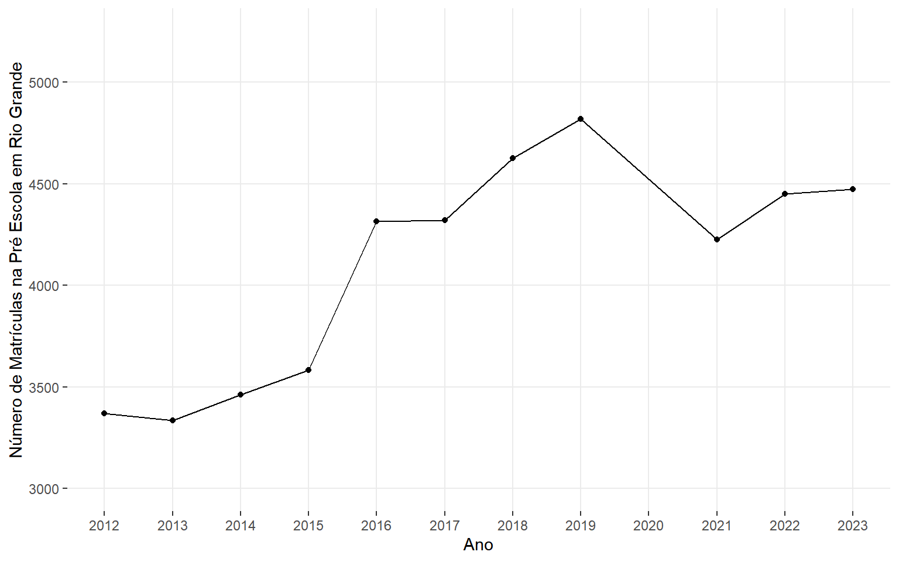
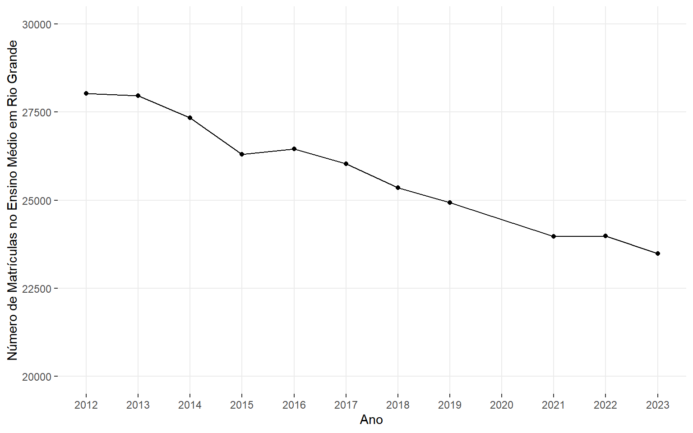
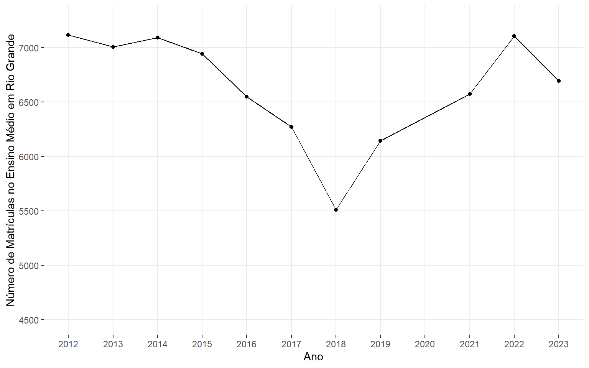

Número de Creches
49
Número de escolas de ensino fundamental
97
Número de escolas de ensino médio
22



Os gráficos foram feitos a partir dos microdados do Censo Escolar, obtidos através do pacote do R “getcensoeducacaodata” (https://github.com/BaruqueRodrigues/getcensoeducacaodata). Os dados foram baixados para o ano de 2023.
| no_uf | no_municipio | nu_ano_censo | total_creches | total_matriculas_pre_escola | total_matriculas_ed_infantil | total_matriculas_fundamental | total_matriculas_medio |
|---|---|---|---|---|---|---|---|
| Rio Grande do Sul | Rio Grande | 2022 | 2033 | 4451 | 6484 | 23982 | 7106 |
| Rio Grande do Sul | Rio Grande | 2023 | 2060 | 4474 | 6534 | 23487 | 6693 |
| Rio Grande do Sul | Rio Grande | 2012 | 751 | 3369 | 4120 | 28031 | 7116 |
| Rio Grande do Sul | Rio Grande | 2013 | 721 | 3335 | 4056 | 27964 | 7008 |
| Rio Grande do Sul | Rio Grande | 2014 | 741 | 3462 | 4203 | 27342 | 7092 |
| Rio Grande do Sul | Rio Grande | 2015 | 769 | 3584 | 4353 | 26301 | 6946 |
| Rio Grande do Sul | Rio Grande | 2016 | 2014 | 4314 | 6328 | 26454 | 6551 |
| Rio Grande do Sul | Rio Grande | 2017 | 1707 | 4321 | 6028 | 26030 | 6273 |
| Rio Grande do Sul | Rio Grande | 2018 | 1844 | 4625 | 6469 | 25360 | 5512 |
| Rio Grande do Sul | Rio Grande | 2019 | 2076 | 4818 | 6894 | 24937 | 6144 |
| Rio Grande do Sul | Rio Grande | 2021 | 1517 | 4226 | 5743 | 23977 | 6576 |